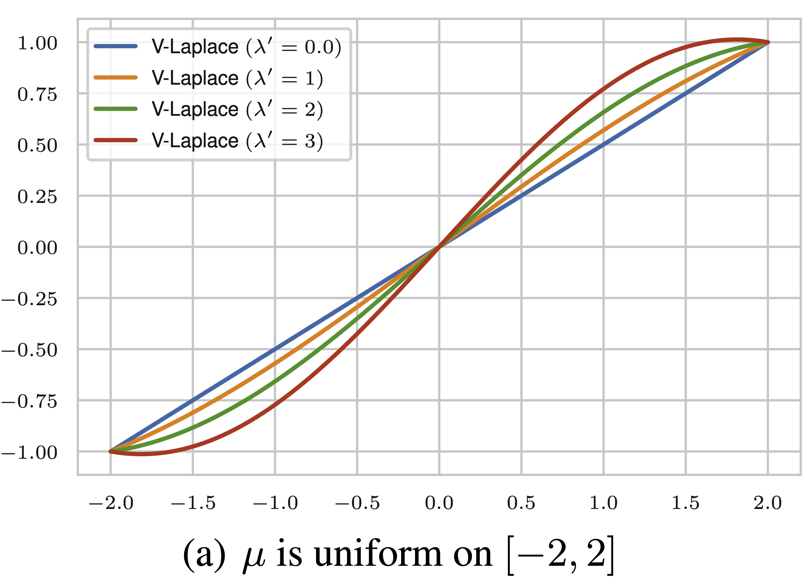
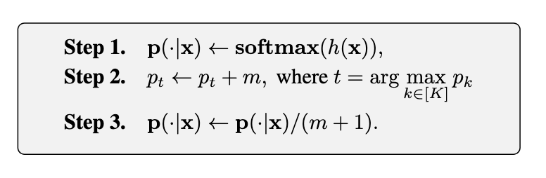

|
Jialiang Wang 王嘉良Ph.D. student
|
Biography
I am a Ph.D. student at Harbin Institute of Technology, advised by Prof. Xianming Liu and Dr. Xiong Zhou. I received my B.E. from Dalian University of Technology in 2023. My research interest is trustworthy machine learning.
Publications
|  | Variance-enlarged Poisson Learning for Graph-based Semi-Supervised Learning with Extremely Sparse Labeled Data |
|
|  | \(\epsilon\)-Softmax: Approximating One-Hot Vectors for Mitigating Label Noise |
Service
- Reviewer: NeurIPS 2024, ICLR 2025
Selected Awards
- Outstanding graduate of Dalian University of Technology, 2023
Last update: 2024/10